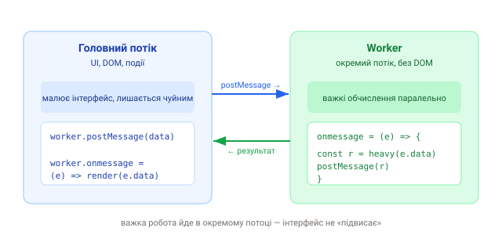

1. Проблема: JS однопотоковий
JavaScript у браузері виконується в одному потоці — тому ж, що малює UI й обробляє події. Якщо запустити важке обчислення (розбір великого файлу, складна математика), потік зайнятий, і сторінка «зависає»: не реагує на кліки, анімації стоять.
2. Рішення: Web Worker
Web Worker — окремий фоновий потік, у якому виконується твій скрипт
паралельно головному. Головний потік лишається чуйним, а важка робота йде збоку.
Спілкування — через повідомлення (postMessage).

Ключове обмеження: worker не має доступу до DOM (немає
document, window). Він рахує й повертає результат, а малює
вже головний потік. Це плата за паралелізм.
3. Мінімальний приклад
// worker.js — окремий файл, окремий потік
onmessage = (e) => {
const result = heavyCompute(e.data); // важка робота
postMessage(result); // віддати результат назад
};// main.js — головний потік
const worker = new Worker('./worker.js', { type: 'module' });
worker.postMessage(bigInput); // відправити дані у worker
worker.onmessage = (e) => {
render(e.data); // отримати й показати результат
};
worker.onerror = (err) => console.error(err);4. Worker у Vite
Збирачі спрощують створення воркера. У Vite є зручний синтаксис через
import ... ?worker або import.meta.url:
// Vite: сам збере worker у окремий файл
const worker = new Worker(new URL('./worker.js', import.meta.url), { type: 'module' });5. Коли (не) потрібен
- ✅ важкі обчислення: обробка зображень, парсинг великих CSV/JSON, шифрування, фізика, аналітика на клієнті;
- ❌ звичайні асинхронні задачі (мережа, таймери) — вони й так не блокують потік; worker тут зайвий;
- ❌ дрібні швидкі операції — накладні витрати на передачу даних переважать вигоду.
Дані у worker копіюються (структуроване клонування), а не передаються за посиланням. Для великих обʼєктів це має ціну; для дуже великих буферів є transferable objects (передача володіння без копії).
6. Види воркерів (коротко)
- Dedicated Worker — належить одній сторінці (те, що вище);
- Shared Worker — спільний для кількох вкладок;
- Service Worker — особливий воркер-проксі для мережі й офлайну (наступні уроки).